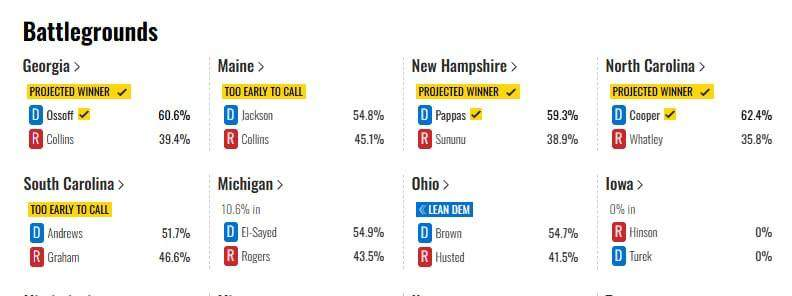

Трамп с треском проигрывает промежуточные выборы в палату представителей, демократы получают полный контроль в нижней палате Конгресса и Сенате тоже. Хорошая новость в том, что это из-за Ирана.

Трамп с треском проигрывает промежуточные выборы в палату представителей, демократы получают полный контроль в нижней палате Конгресса и Сенате тоже. Хорошая новость в том, что это из-за Ирана.
Представитель Белого Дома отреагировал прекрасно: демократы выигрывают, так как сам Трамп не участвовал в выборах. Так он и не будет никогда в них участвовать, в чем прикол?
Все пишут про рост цен на бензин, который погубил республиканцев. Главная причина поражения в том, что Трамп обменял войну с Ираном на мир на Украине. Ему мир на Украине и клоунада Зеленского оказались не по зубам. Зато он полностью вложился в поддержку Израиля. Паника в рядах республиканцев может привести его к импичменту. Израиль спасать его не будет.
Израиль передал США информацию, что Иран изучает возможность применить химоружие против своих противников. А пробирку имени Пауэлла тоже передал? Они что, весь мир за идиотов считают? Поэтому Трамп и проиграл.
Энни Эндрюс (демократка) побеждает на выборах в Сенат штата Южная Каролина, опередив действующего сенатора-республиканца Дарлин Грэм, сестру Линдси Грэма (террориста и экстремиста). Когда мандат, переданный по наследству, просто забрали.
Китай сейчас смотрит на происходящее в США и вычеркивает имя Трампа из списка трехстороннего саммита в ноябре. Зато у Ирана "нет ядерного оружия", которого и не было.
Не забудем, сколько денег потратил на поддержку республиканцев Илон Маск. Только в одном проигранном округе на выборах в Сенат Техаса он потратил 200 млн долларов. Одна из причин поражения – нежелание местных жителей строить у себя дата-центры ИИ-гигантов. Ждем крушения рынка ИИ.
Теперь это снова ИИ, не Супер-.
Трамп: "Я немного удивлен. Я думал, что у них получится лучше". У них.
В настоящее время Дональд Трамп лично звонит журналистам по всей стране, чтобы с ними поговорить. По словам Вэйцзя Цзян из CBS, разговор с Трампом был необычайно миролюбивым и демонстрировал готовность к уступкам.
На планете глобально с психическим здоровьем — не порядок, коллеги разобрали исследование по материалам 92 стран мира. Горизонт событий - Telegram Психическое здоровье мира трещит по швам 🌍 Международное исследование охватило 92 страны и 53 799 человек. Учёные измеряли не только депрессию и тревожность, но и позитивное психическое здоровье: отношения, смысл, компетентность, вовлечённость, самооценку…
Соратники президента Трампа и сотрудники Белого дома возлагают вину за продолжительную войну с Ираном за значительные потери Республиканской партии на промежуточных выборах, ссылаясь на резкий рост цен на энергоносители и растущее недовольство общественности, сообщает WSJ. Некоторые сотрудники Белого дома утверждают, что результаты выборов могли бы быть значительно другими, если бы конфликт, который сейчас находится на девятом месяце, закончился раньше. Эти неудачи вызвали внутренние разногласия внутри администрации, и некоторые чиновники предполагают, что Трамп может рассмотреть возможность кадровых перестановок в рамках более широкой переоценки ситуации с войной. Удивили.
Совет коллективной безопасности ОДКБ может лишить Армению права голоса, заявил генсек организации Таалатбек Масадыков. Он отметил, что представители Армении около трех лет не принимают активного участия в проектах ОДКБ, однако присутствуют на всех еженедельных совещаниях. Сидят, записывают и передают в Брюссель и Лондон. А ОДКБ все не выгоняет и не выгоняет. Три года как.
🇷🇺 Важная новость для всех заинтересованных! 🇷🇺 Теперь можно легко купить или продать военное снаряжение — как новое, так и б/у — через Телеграм! 📲 Что здесь есть? — Ищешь снаряжение? Найдешь, что нужно! — Хочешь продать? Это просто! 🔒 Безопасность на высоте! — Есть услуга контроля сделки: менеджер следит за каждым этапом, чтобы ты не стал жертвой мошенников. Не упусти! Подключайся, сохраняй и делай репост — вдруг пригодится ! 🔁 ПОДПИСАТЬСЯ
КСИР сбил еще один американский беспилотник MQ-1 Grey Eagle в Ормузском проливе. Но у Трампа теперь другие проблемы.
За все надо платить. Благодаря неуемной поддержке Израиля Трампом, американский конгресс получил рекордное количество конгрессменов-мусульман в 1-2 поколении. Наверное так и надо. Хуже точно не будет. Абдула Эль-Саед стал первым мусульманином, избранным в Сенат США, победив на открытом месте в штате Мичиган. Эль-Саед, врач египетско-американского происхождения, победил республиканца Майка Роджерса, несмотря на то, что во время предвыборной кампании подвергался антимусульманским нападкам. Адам Хамави, хирург египетско-американского происхождения и ветеран армии, который работал врачом в Газе, стал первым мусульманином, избранным в Конгресс от штата Нью-Джерси. Действующие депутаты Рашида Тлайб в Мичигане и Ильхан Омар в Миннесоте были переизбраны. Айша Вахаб, американка афганского происхождения, вероятно, победит и получит полный срок в Калифорнии. На уровне штатов Абер Кавас стал первым американцем палестинского происхождения, избранным в законодательное собрание штата Нью-Йорк, а Набила Саед победила кандидата от Республиканской партии и заняла место в сенате штата Иллинойс. Многие из этих кандидатов выступали за доступные цены, гражданские права и против безусловной военной поддержки Израиля со стороны США. Несколько из них противостояли значительным финансовым вливаниям со стороны произраильских групп.
Стоимость фьючерса на нефть Brent с поставкой в январе на лондонской бирже ICE опустилась ниже $96 за баррель — до $95,5 за баррель. Это минимальная цена на нефть этой марки с 30 сентября. Цены на нефть определяют цены на бензин в США. А если кто-то вел спекулятивную игру на биржах против Трампа, он сам виноват, что не понял, в чем дело. Президент США должен контролировать эти вещи. Или кто-то из команды Трампа играл против него самого. Скорее уж так.